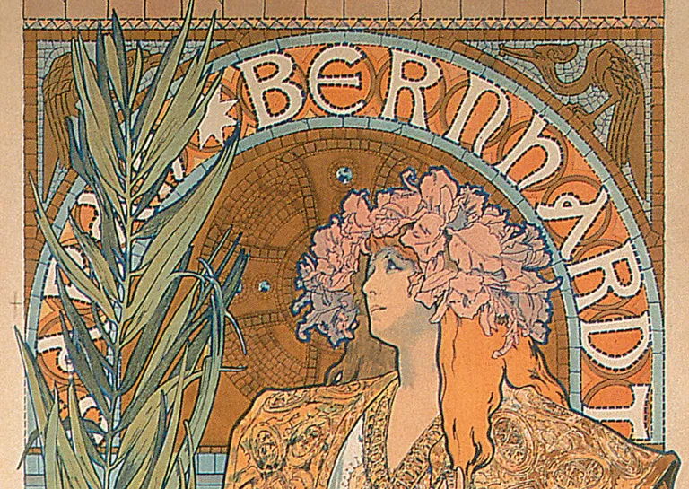

Art Nouveau (1890–1910)
Art Nouveau emerged across Europe at the turn of the 20th century as an international decorative style. It sought to create a total work of art, integrating architecture, graphic design, furniture, jewelry, and illustration into a unified aesthetic language.
Characterized by flowing lines, floral motifs, and organic curves, the movement rejected historical revival styles and instead looked to nature as a source of abstraction.
Central Figure: Alphonse Mucha

Alphonse Mucha, Gismonda, 1894

Alphonse Mucha, Job Cigarettes, 1896
Mucha revolutionized poster design by merging typography and illustration into cohesive compositions. His elongated female figures are framed by halos, botanical patterns, and ornamental borders that structure the entire surface.
Unlike earlier illustration, text is not simply placed on top of image — it is embedded within the ornamental framework. Art Nouveau represents the peak of ornament as expressive structure rather than surface embellishment.
This period marks the culmination of the 19th-century belief that ornament could carry cultural identity, beauty, and emotional depth.